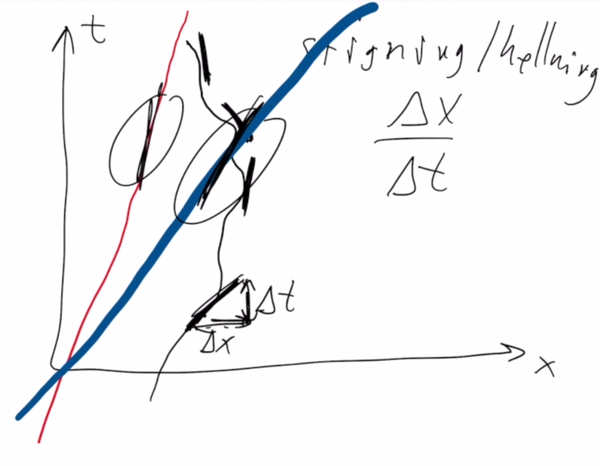

Forrige side🙂 🙁TidromdiagramPADLET

Vi sluttet videoen med denne figuren. Og med spørsmålet om hva helningen/stigningen til verdenslinjene betyr fysisk. Merk at vi definerer stigningen her som økning langs x-akse delt på endring langs y-akse. Vi ser her to rette linjer, rød og blå, som er verdenslinjene til to forskjellige observatører. Hva er forskjellig for disse observatørene? Hva betyr det at helningen til linjene deres er forskjellig? Tenk deg godt om før du går videre!